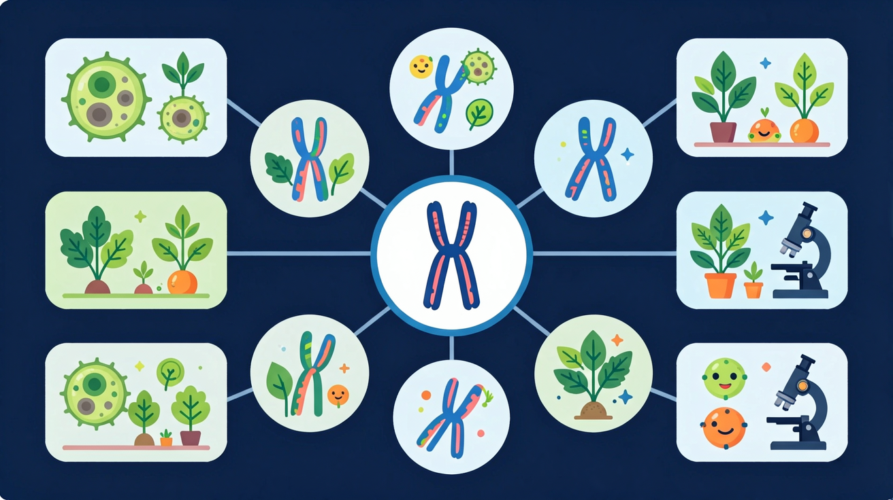
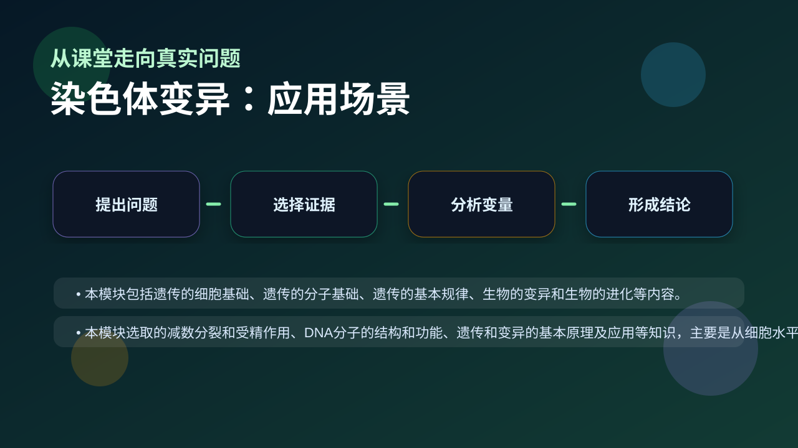

Gallery v1.0.0 · skill v7.14
遗传信息怎样被保存、表达、传递，又怎样影响性状？

先选一个卡点。后面的例子、互动和 AI 学伴都会围绕它给你最小提示。
选择或输入后，本课会围绕你的问题展开。
如果学生只说出概念名称，继续追问：题干里哪个证据最关键？这个证据对应分子、细胞、个体还是生态系统层级？如果改变 染色体数目、结构重排、同源染色体分离和配子形成 中的一个条件，结果会怎样？这三问能把答案从背诵推进到科学解释。
❓ 为什么染色体变异会导致唐氏综合征？
❓ 染色体数目变异和结构变异哪个更危险？
❓ 同源染色体联会异常算不算染色体变异？
学完这一课，这些问题你都能自信地回答。
已经知道：学生已在此前学习过基因、DNA和染色体的基本关系，理解染色体是基因的载体，并在孟德尔遗传规律中接触过同源染色体分离的概念。
但问题是：学生常混淆染色体数目变异（如三体综合征）与基因突变的概念，且难以理解倒位、易位等结构变异如何通过减数分裂异常导致配子遗传物质改变。
所以学：当遗传咨询师分析唐氏综合征患儿核型图时，需要准确判断21号染色体三体现象属于染色体数目变异而非基因突变，并解释其减数分裂形成机制。
下列哪种变异在显微镜下不可见？
比较二倍体与四倍体风仙花的叶片气孔和花朵大小
现象入口：某些个体出现染色体数目或结构异常，如三体、缺失、重复、倒位。
机制解释：染色体变异涉及较大片段或整条染色体变化，影响多个基因剂量或排列。
证据抓手：证据来自染色体核型图、减数分裂异常和表型综合变化。
变量线索：染色体数目、结构重排、同源染色体分离和配子形成。做题时先找变量，再判断机制，最后写证据。
情境：21三体综合征属于染色体数目变异，不是单个基因显隐性控制。
作答路径：现象：21三体患者智力低下伴特殊面容→机制：减数分裂时21号染色体未分离导致卵子含两条21号染色体→证据：核型分析显示47,XX,+21染色体组成，显微镜下可见三条21号染色体。
评分提醒：典型失分：混淆基因突变与染色体变异观察性差异；未明确多倍体不育的联会紊乱机制；未指出秋水仙素作用于分裂前期。
观察三倍体西瓜细胞染色体组数异常
分析秋水仙素阻断纺锤丝形成的分子机制
阐明染色体倒位导致联会异常的原理
设计实验验证易位染色体的遗传效应

解释无籽西瓜、多倍体育种和染色体病，都要看染色体层级。
提交后会检查你的解释是否包含现象、机制和变量。
秋水仙素抑制纺锤体形成，染色体复制后不能移向两极，细胞染色体数加倍——无子西瓜就是这样育成的。
💡 探究任务：调处理浓度，看加倍成功率与细胞死亡率如何此消彼长，解释育种中为什么要摸索最适浓度。
四倍体植株形成的主要原因是？
先独立作答，再点选项查看对错与错因。
该变异草莓植株染色体数目从56条变为84条，属于
此类变异最可能影响草莓的
下列育种方式能产生类似变异的是
普通草莓体细胞含____个染色体组（已知2n=56）
答案：8
56÷7=8（草莓基数为7）
染色体____变异会导致猫叫综合征（填'数目'或'结构'）
答案：结构
该病由5号染色体短臂缺失引起
下列现象中能通过显微镜直接观察到的是？
学习小结：染色体变异分为结构变异（缺失/重复/倒位/易位）和数目变异（整倍/非整倍），多倍体诱导需秋水仙素抑制纺锤体形成，显微镜可观察形态数目异常。
把基因突变和染色体变异混为一谈，忽略尺度差异。
只说“增加/减少”不够，要写清改变的是 染色体数目、结构重排、同源染色体分离和配子形成 中的哪一个。
没有实验现象、曲线趋势或结构证据，答案就像猜测。
✅ 只有发生在生殖细胞的变异可遗传
💡 混淆体细胞突变与生殖细胞突变
✅ 基因重组不改变染色体结构/数目
💡 未区分分子水平变异与染色体水平变异
口诀：数目增减性状变，结构改变位置换
类比：像乐高积木拼错——少一块（缺失）、多一块（重复）、装反了（倒位）、接到别的模型上（易位）
视频用语音和动态画面回顾本课主线：问题情境 → 机制模型 → 证据判断 → 迁移应用。
先用 PhET 观察转录和翻译如何把遗传信息转成蛋白质，再回到本课的 Canvas 任务，把“信息流”与 染色体变异 联系起来。
💡 操作提示：拖动调控元件，观察 mRNA 和蛋白质产量变化，思考“表达量变化”和“性状变化”之间的证据链。
写出三倍体西瓜不育的细胞学原因
分析秋水仙素处理二倍体草莓根尖后染色体行为变化
设计用显微镜区分易位与倒位染色体的观察要点